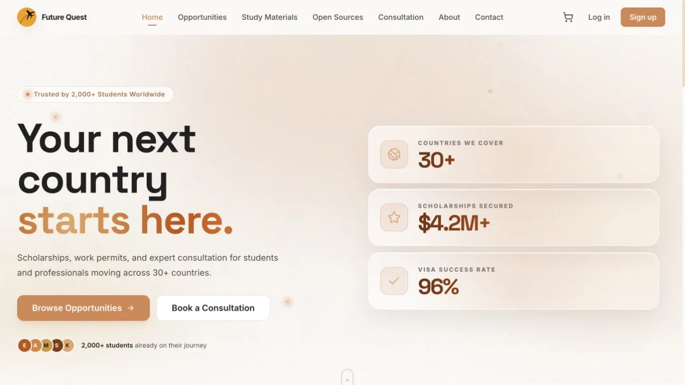
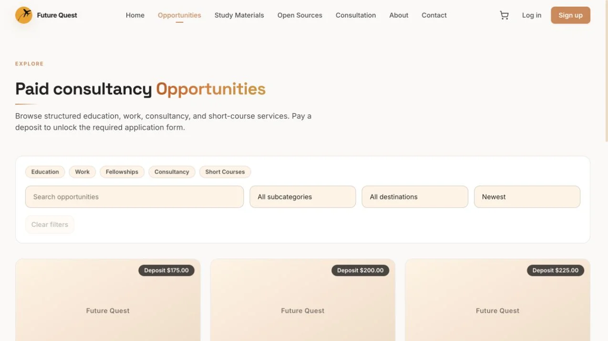

Web application
Future Quest
An education opportunity platform that moves discovery, study resources, and consultation beyond an office visit.

Homepage screenshot preserved from the existing portfolio. The live platform continues to evolve.
01 · My contribution
I helped develop and test Future Quest with the team, alongside leading the product from early development through launch. I connected student needs to opportunity discovery, consultation paths, content structure, and remote application journeys.
02 · The problem & the people
Headway’s scholarship, study, and visa services depended on students visiting an office. That limited access for people outside Addis Ababa. Future Quest translates the service into a digital journey for students and professionals exploring international opportunities.
03 · The platform’s user journeys
- Discover scholarships and other international education or work opportunities through the opportunities area.
- Browse study materials and access free guides and resources.
- Find consultation options and begin a remote support journey.
- Use the public materials cart and the checkout path described by the current site.
04 · My role & the team’s implementation
My confirmed scope includes co-development, testing, product planning, workflow definition, team coordination, and launch delivery. This combines hands-on application work with understanding how students move from an initial question to an application.
The current live platform uses a Next.js/React frontend. Its public journeys cover opportunities, resources, consultations, and materials. The site describes Polar checkout; individual responsibility for that integration is not assigned here.
05 · Challenge: translating a service into a product
The documented product challenge was preserving guidance while removing the need for an office visit. I helped map discovery and application journeys, organize destinations and resources, and connect students to consultation paths.
06 · Testing, launch & outcomes
I contributed to testing, and the existing case study records a 2024 launch after development began in 2022. The platform is publicly accessible. No verified automated-test coverage or deployment pipeline is available in the reviewed source material.
The prior portfolio reports 2,000+ students served across 30+ countries. Those are reported platform/service outcomes, not a measure of my individual code contribution. The platform is a web application; no native, cross-platform, or installed PWA companion has been verified.

Verified tools & methods
- Next.js / React · observed on live site
Related links & evidence
Co-development and testing confirmed by Dawit. Product role and historical results come from the prior case study and CV. The current live frontend and journeys are visible publicly; backend details and individual feature ownership have not been provided.